용접기사 (2009-07-26 기출문제)
1과목: 기계제작법
1. 두께 2mm인 연강판에서 지름 100mm의 원을 펀칭하는 데 필요한 힘은 약 몇 kgf 인가? (단, 연강판의 전단저항은 30kgf/mm2 이다.)
- 2550
- 4680
- 18850
- 37680
(정답률: 알수없음)

2. 피측정물을 확대 관측하여 복잡한 모양의 윤곽, 좌표의 측정, 나사 요소의 측정 등과 같이 단독 요소의 측정기로는 측정할 수 없는 부분을 측정할 때 사용하는 것으로 가장 적합한 것은?
- 피치 게이지
- 나사 마이크로 미터
- 공구 현미경
- 센터 게이지
(정답률: 67%)
3. 연삭 중에 떨림(chattering)이 발생하면 거칠기가 나빠지고 정밀도가 저하된다. 떨림(chattering)의 원인으로 거리가 먼 것은?
- 숫돌의 평형상태가 불량할 때
- 숫돌의 결합도가 너무 낮을 때
- 연삭기 자체의 진동이 있을 때
- 숫돌축이 편심되어 있을 때
(정답률: 50%)
4. 그림과 같이 삼침을 이용하여 미터나사의 유효지름(d2)을 구하고자 한다. 다음 중 올바른 식은? (단, a : 나사산의 각도, P : 나사의 피치, d : 삼침의 지름, M : 삼침을 넣고 마이크로미터로 측정한 치수)
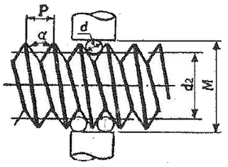
- d2=M+d+0.866025P
- d2=M-d+0.866025P
- d2=M-2d+0.866025P
- d2=M-3d+0.866025P
(정답률: 42%)
5. 수직 밀링 머신의 주요 부분에 해당하지 않는 것은?
- 테이블(table)
- 컬럼(column)
- 에이프런(apron)
- 니(knee)
(정답률: 알수없음)
6. 자동차용 판 스프링과 같이 반복하중을 받는 제품에 피로 강도를 높이기 위한 표면 처리방법으로 가장 적합한 것은?
- 배럴(barrel) 가공
- 숏 피닝(shot peening)
- 슈퍼 피니싱(super finishing)
- 래핑(lapping)
(정답률: 80%)
7. 이음매 없는 강관을 제조하는 방법으로 적합하지 않은 가공법은?
- 만네스만 천공법
- 인발
- 압출
- 맞대기 심 용접
(정답률: 46%)
8. 굽힘 가공 시 스프링 백의 양이 커지는 경우에 해당하지 않는 것은?
- 두께가 얇을수록
- 탄성한계 및 강도가 클수록
- 굽힘 각도가 예리할수록
- 굽힘 반지름이 작을수록
(정답률: 60%)
9. 접시머리 나사의 머리부를 묻히게 하기 위하여 테이퍼 원통형으로 절삭하는 가공은?
- 보링
- 리밍
- 카운터 싱킹
- 카운터 보링
(정답률: 알수없음)
10. 압연가공에서 가공 전의 두께가 20mm 이던 것이 가공 후의 두께가 15mm로 되었다면 압하율(%)은 얼마인가?
- 20%
- 25%
- 30%
- 40%
(정답률: 알수없음)
11. 주물의 정밀도가 높고 표면이 깨끗하며 알루미늄 합금과 마그네슘 합금 등의 주조에 주로 사용하나, 금형의선택 조건이 까다롭고 비싸므로 대량 생산에 주로 이용되는 주조법에 해당하는 것은?
- 셀 몰드 주조법
- 칠드 주조법
- 다이캐스팅법
- 원심 주조법
(정답률: 77%)
12. 절삭가공에서 구성인선(built-up edge)에 관한 설명으로 옳은 것은?
- 공구 윗면경사각이 작을수록 구성인선은 작아진다.
- 고석으로 절삭할 수록 구성인선은 감소한다.
- 마찰계수가 큰 절삭공구를 사용하면 칩의 흐름에 대한 저항을 감소시킬 수 있다.
- 칩의 두께를 증가시키면 구성인선을 감소시킬 수 있다.
(정답률: 60%)
13. 측정기를 직접 측정기와 비교 측정 측정기로 구분할 때 비교 측정기에 해당되는 것은?
- 마이크로미터
- 공기 마이크로미터
- 버니어캘리퍼스
- 측장기
(정답률: 30%)
14. 열처리에서 서브제로(sub zero)처리를 가장 올바르게 설명한 것은?
- 강칠을 담금질하기 전 표면에 붙은 불순물을 화학적으로 제거 처리 하는 것
- 담금질 직후 바로 뜨임하기 전에 얼마 동안 약 450℃ 부근에서 두었다가 뜨임 하는 것
- 처음 기름으로 냉각 후 계속하여 물속에 담그고 냉각하는 것
- 담금질한 제품을 0℃ 이하의 온도까지 냉각시켜 잔류 오스테나이트를 마르텐사이트화 시키는 것
(정답률: 79%)
15. 목형에 라운딩(rounding)을 하는 가장 큰 목적은?
- 목형의 모양을 아름답게 하기 위하여
- 목형의 제작을 용이하게 하기 위하여
- 주형 모서리 부분의 파손을 예방하기 위하여
- 형상이 복잡한 주물의 변형을 방지하기 위하여
(정답률: 70%)
16. 다음은 연삭숫돌의 표시법이다. WA와 H는 각각 연삭숫돌의 무엇을 의미하는 것인가?
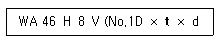
- 결합도, 조직
- 연삭숫돌입자의 종류, 입도
- 연삭숫돌입자의 종류, 결합도
- 결합도, 결합제
(정답률: 65%)
17. TIG 용접 및 MIG 용접은 어느 용접에 해당되는가?
- 불활성가스 아크 용접
- 직류 아크 일미나이트계 피복 용접
- 교류 아크 셀룰로스계 피복 용접
- 서브머지드 아크 용접
(정답률: 100%)
18. 초음파 가공장치에 관한 설명으로 틀린 것은?
- 구멍을 가공하기 쉽다.
- 복잡한 형상도 쉽게 가공할 수 있다.
- 부도체의 가공은 할 수 없다.
- 가공재료의 제한이 매우 적다.
(정답률: 85%)
19. 강재의 표면에 규소(Si)를 고온에서 확산 침투시키는 방법으로 내식성, 내열성 등을 향상시키는 표면경화법에 해당하는 것은?
- 질화법
- 청화법
- 크로마이징(chromizing)
- 실리코나이징(siliconizing)
(정답률: 91%)
20. 다이(die)를 탄성이 뛰어난 고무를 적층으로 두고 가공 소재를 형상을 지닌 펀치로 가압하여 가공하는 성형가공법은?
- 폭발 성형법
- 엠보싱법
- 마폼법
- 전자력 성형법
(정답률: 67%)
2과목: 재료역학
21. 지름이 50 mm이고 길이가 200mm인 시편으로 비틀림 실험을 하여 얻은 결과, 토크 30.6Nㆍm에서 전 비틀림 각이 7°로 기록되었다. 이 재료의 전단 탄성계수 G는 약 몇 MPa 인가?
- 81.6
- 40.6
- 66.6
- 97.6
(정답률: 알수없음)
22. 그림과 같이 플랜지와 웨브로 구성된 I형 보 단면에 아래방향으로 횡전단력 V가 작용하고 있다. 이 단면에서 V에 의해 발생되는 전단응력이 가장 큰 점의 위치는?
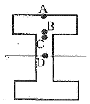
- A
- B
- C
- D
(정답률: 59%)
23. 원형 봉에 축방향 인장 하중 P=88kN이 작용한다. 봉은 길이 L=2m, 직경 d=40mm, 탄성계수 E=70GPa, 포아송비 μ=0.3이다. 직경의 감소량은 약 몇 mm 인가?
- 0.006
- 0.012
- 0.018
- 0.036
(정답률: 38%)
24. 그림과 같이 재질과 단면이 동일하고 길이가 다른 2개의 외팔보를 자유단에서의 처짐이 동일하게 하는 외력의 비 P1/P2 은? (단, 보의 굽힘강성 EI는 일정하다.)
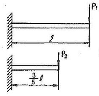
- 0.547
- 0.437
- 0.325
- 0.216
(정답률: 0%)
25. 원형 단면 기둥 A와 정사각형 단면 기둥 B가 동일한 세장비를 가질 때 기둥의 길이 비
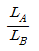
은? (단, 각 경우에서 원형 단면의 지름과 정사각형 단면에서 한 변의 길이는 20cm 이다.)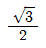
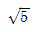
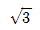
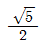
(정답률: 77%)
26. 탄성계수 E=200GPa, 포아송 비 μ=0.3 일 때 전단 탄성 계수 G 값은 약 몇 GPa 인가?
- 66
- 77
- 88
- 99
(정답률: 72%)
27. 재질이 같은 A, B 두 균일 단면의 봉에 인장하중을 작용시켜 변형률을 측정하였더니
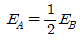
이었다. 봉 B의 단위 체적속에 저장되는 탄성에너지 UB는 봉 A의 탄성에너지 UA와 어떤 관계인가?- UB=4UA
- UB=2UA
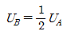
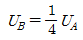
(정답률: 70%)
28. 그림과 같이 지름 (d) 6cm인 축에 10×10×50mm(폭×높이×길이)의 묻힘 키를 사용하여 축심 거리 1m의 레버로 작동시키려고 할 때 레버의 끝에 작용시킬 수 있는 하중 P의 크기는 몇 N 인가? (단, 키에 걸리는 평균 전단응력 τw=55MPa로 한다.)
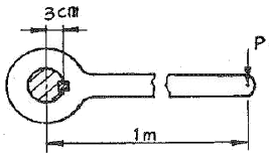
- 8250
- 825
- 82.5
- 8.25
(정답률: 70%)
29. 다음과 같은 양단 고정보가 중앙에 집중 하중 P를 받는 경우 고정단의 모멘트(End moment) MA(=MB)는?
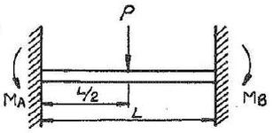
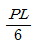
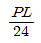
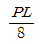
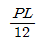
(정답률: 알수없음)
30. 그림에서 점 C단면에 작용하는 내부 합모멘트는 몇 Nㆍm 인가?
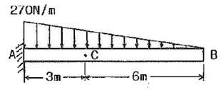
- 270
- 810
- 540
- 1080
(정답률: 70%)
31. 직사각형 단면을 갖는 균일 강도(uniform strength)의 외팔보를 만들고자 폭(b)을 5cm로 고정시키고 높이 h를 변화시키고자 한다. 자유단에 집중하중 78.4kN이 작용할 때 자유단으로부터 50cm 떨어진 위치에서의 단면의 높이를 구하면 약 몇 cm인가? (단, 허용 굽힘응력 σa=98MPa 이다.)
- 21.4
- 19.4
- 17.4
- 13.4
(정답률: 42%)
32. 45° 스트레인 로제트에서 Ea=100×10-6, Eb=200×10-6, Ec=400×10-6이다. 이 때 주변형률의 크기는?
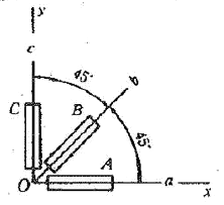
- E1=164.14×10-6, E2=135.86×10-6
- E1=328.28×10-6, E2=271.72×10-6
- E2=408.1×10-6, E2=91.9×10-6
- E1=960.2×10-6, E2=183.8×10-6
(정답률: 67%)
33. 안지름 30mm, 바깥지름 50mm인 중공축을 100kW의 동력을 전달하는데 이용하려 한다. 이떄 축의 전단 응력이 50MPa이라면 축의 회전 주파수는 약 몇 Hz 인가?
- 12
- 15
- 18
- 22
(정답률: 34%)
34. 길이 15m, 지름 10mm의 강봉에 8kN의 인장 하중을 걸었더니 탄성변형이 생겼다. 이때 늘어난 길이는 약 몇 mm 인가? (단, 이 강재의 탄성계수 E=210GPa이다.)
- 7.3
- 2.28
- 0.73
- 0.28
(정답률: 58%)
35. 그림과 같은 정사각형 담년을 가지는 짧은 기둥의 측면에 홈이 파여 있을 때 도심에 작용하는 축하중 W로 인해 단면 n-n'에 발생하는 최대 압축응력의 크기는?
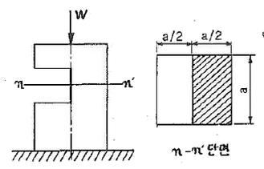
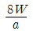
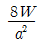
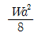
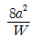
(정답률: 77%)
36. 원뿔대 형태의 주춧돌을 비중량 7500M/m3의 콘크리트로 만들었다. 주춧돌에서 바닥으로부터 높이 1m되는 부분에 작용되는 수직 응력은 약 몇 kPa인가?
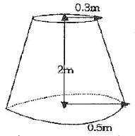
- 5.78
- 8.75
- 9.76
- 19.72
(정답률: 62%)
37. 그림과 같이 좌측 끝이 고정된 지름 2cm, 길이 2m인 원형 축의 우측 끝에 비틀림 모멘트 T가 작용하고 있다. 축의 우측 끝점에서 허용 비틀림 각이 30°라고 할 때 비틀림 모멘트 T의 최대 허용치는 약 몇 Nㆍm 인가? (단, 축 재료의 전단 탄성계수 G는 80GPa이다.)
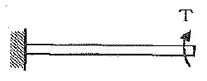
- 328
- 348
- 368
- 388
(정답률: 34%)
38. 그림과 같은 일단 고정 타단지지보의 중앙에 P=4800N의 하중이 작용하면 지지점의 반력 (RB)은 몇 kN인가?
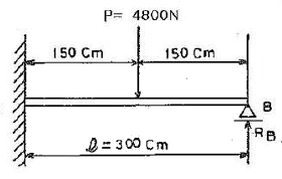
- 3.2
- 2.6
- 1.5
- 1.2
(정답률: 50%)
39. 그림과 같은 사각형 단면에서 도심 0에 대한 극관성모멘트는?
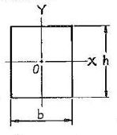
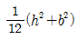
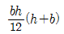
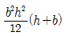
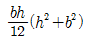
(정답률: 65%)
40. 단면의 폭(b)과 높이(h)가 6cm×10cm인 직사각형이고, 길이가 100cm인 외팔보 자유단에 10kN의 집중 하중이 작용할 경우 최대 처짐은 약 몇 cm인가? (단, 탄성계수 E=210GPa이다.)
- 0.104
- 0.254
- 0.317
- 0.542
(정답률: 30%)
3과목: 용접야금
41. 동일 용접 조건에서 금속 재료의 열전도도가 높을 경우, 용접에 미치는 영향을 가장 올바르게 설명한 것은?
- 용접부의 열 방산이 잘되어 열영향부의 연성을 향상시킨다.
- 용접부의 열 방산이 잘되어 용접성이 나빠진다.
- 용접부의 영 방산이 잘되지 않아 용접변형이 적어진다.
- 용접부의 열 방산이 잘되지 않아 용접성이 나빠진다.
(정답률: 25%)
42. 탄소강의 표준 조직에 해당 되지 않는 것은?
- 시멘타이트(cementite)
- 페라이트(ferrite)
- 펄라이트(pearlite)
- 솔바이트(sorbite)
(정답률: 70%)
43. 저수소계 용접봉 사용시 건조에 관한 설명으로 가장 적절한 것은?
- 일단 건조로에서 꺼낸 용접봉은 1주일 이내 사용시 재건조가 필요 없다.
- 용접봉은 작업 전에 300~350℃ 정도로 1~2시간 정도 건조시켜 사용한다.
- 용접봉의 건조는 70~100℃의 건조로에서 행하면 된다.
- 용접봉은 작업 전에 10~50℃ 정도로 3~5시간 정도 건조시켜 사용한다.
(정답률: 85%)
44. 용접 야금 응용에서 일반적으로 크랙(crack)의 형성 기구를 전위론적으로 설명할 때 해당 되지 않는 것은?
- 탄성적 크랙
- 경사경계에서의 크랙
- 입계집적에 의한 크랙
- 밀도에 의한 크랙
(정답률: 알수없음)
45. 18Cr - 8Ni 스테인리스강에 600~800℃의 온도범위로 가열하면 오스테나이트 경정입계에 탄화물이 석출하여 내식성이 현저하게 저하하는 현상은 무엇인가?
- 결정성장
- 미립화 확산
- 입간부식
- 입계조립화
(정답률: 64%)
46. 용접작업에서 단위시간 내의 아크 발생시간을 백분율로 표시한 것을 무엇이라고 하는가?
- 작업 시간
- 용접 속도
- 여유 시간
- 아크 타임
(정답률: 75%)
47. 주철을 고온으로 가열, 냉각 가정을 반복하면 부피는 팽창하는데 이러한 현상을 추철의 성장이라고 한다. 그 원인으로 틀린 것은?
- 펄라이트 조직 중의 Fe3C 분해에 따른 흑연화
- 펄라이트 조직 중의 Si의 산화
- 흡수된 가스의 팽창에 따른 부피 증가
- A1변태의 반복과정에서 오는 체적 변화에 기인되는 미세한 균열의 발생
(정답률: 64%)
48. 연강용 피복 아크 용접봉에 주로 사용되는 심선 재료는?
- 저탄소 림드강
- 중탄소 세미킬드강
- 고탄소 킬드강
- 저탄소 킬드강
(정답률: 73%)
49. 용접 슬래그의 산 또는 염기의 강도는 용접할 때 화학반응에 중요한 역할을 하고 있다. 염기도 표시로 옳은 것은? (단, A=산성 성분의 총합, B=염기성 성분의 총합, As=용접 슬래그의 염기도)
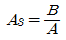
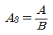
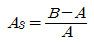
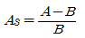
(정답률: 47%)
50. 용접에서 본드에 가까운 열영향부의 특성으로 가장 적절한 것은?
- 결정이 조립화(租粒化)된다.
- 강도가 강해진다.
- 연신이 커진다.
- 취성이 완화된다.
(정답률: 82%)
51. 용접금속에서 수소의 영향이 아닌 것은?
- 언더비드 크랙
- 은점
- 선상조직
- 석출경화
(정답률: 알수없음)
52. 강을 A3 변태점 이상에서 적절한 온도의 염욕 또는 금속중에 냉각하여 일정한 온도로 펄라이트 변태를 끝내는 방법의 열처리는?
- 불림취성
- 항온뜨임
- 항온불림
- 항온풀림
(정답률: 73%)
53. 산소 및 질소가스사 용접금속의 여러가지 성질 변화에 미치는 영향이 아닌 것은?
- 석출경화
- 변형시효
- 청열취성
- 질량효과
(정답률: 40%)
54. 은점(fish eye)에 관한 설명 중 틀린 것은?
- 용착 금속이 인장 또는 굽힘으로 파단 될 때 파면에 나타나는 원형의 결함이다.
- 은점 생성의 주요 원인은 수소의 석출취화이다.
- 용착 금속의 인장강도에는 거의 영향이 없으나 연신은 감소시킨다.
- 불순물 S, P의 편석에 의한 것이다.
(정답률: 64%)
55. 일반적으로 용접 금속 중의 산소의 영향으로 맞는 것은?
- 연신율과 충격치를 증가시킨다.
- 연신율과 충격치를 감소시킨다.
- 연신율과 충격치에는 무관하다.
- 충격치는 증가시키거나 강도와 연신율은 감소시킨다.
(정답률: 50%)
56. 용접시 열효율과 가장 관계가 없는 인자는?
- 용접봉의 길이
- 아크의 길이
- 용접속도
- 모재두께
(정답률: 80%)
57. 용융금속의 결정을 미세화 하는 방법이 아닌 것은?
- 자기교반(磁氣攪拌)
- 초음파 진동
- 합금원소 증가
- 고온에서 가열
(정답률: 46%)
58. 열영향부의 냉각 속도에 영향을 미치는 중요한 용접 조건이 아닌 것은?
- 용접 전류
- 아크 전압
- 아크 분포
- 용접 속도
(정답률: 70%)
59. 다음 중 면심입방격자로만 조합된 것은?
- Al, Ni, Cu
- Pt, Pb, V
- Ag, Au, W
- Mg, Zn, Cd
(정답률: 86%)
60. 피복아크 용접봉의 피복제 중에서 슬래그 생성제가 아닌 것은?
- 산화철
- 일미나이트
- 산화티탄
- 페로망간
(정답률: 9%)
4과목: 용접구조설계
61. 연강 맞대기 이음에서 용착 금속의기계적 인장강도 80kgf/mm2에 대한 안전율이 6이라면 이음의 허용 응력은 약 몇 kgf/mm2 인가?
- 11.6
- 13.3
- 14.5
- 16.1
(정답률: 28%)
62. 자분 탐상 검사에서 피 검사물의 자화방법이 아닌 것은?
- 코일법
- 관통법
- 펄스 반사법
- 극간법
(정답률: 54%)
63. 다음 그림에서 용접부의 용입(penetration)을 나타내는 것은?
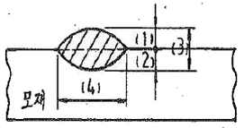
- (1)
- (2)
- (3)
- (4)
(정답률: 93%)
64. 아크 용접작업자는 눈에 대한 장해, 화상, 감전 등의 재해를 받기가 아주 쉽다. 재해요소와 거리가 먼 것은?
- 스패터링과 슬래그 비산
- 아크 광선과 감전
- 중독성 가스
- 컴비네이션 스퀘어
(정답률: 알수없음)
65. 다층용접에서 층을 쌓는 방법이 아닌 것은?
- 덧살올림법(Build up method)
- 블록법(Block method)
- 캐스케이드(Cascade method)
- 스킵법(Skip method)
(정답률: 73%)
66. 용접부 각 변형의 방지대책으로 맞는 것은?
- 용착 속도가 느린 용접방법을 선택한다.
- 구속 지그를 활용하지 않는다.
- 역변형 시공을 한다.
- 개선 각도를 최대한 크게 한다.
(정답률: 74%)
67. 맞대기 용접에서 홈 설계의 유의사항으로 틀린 것은?
- 루트 간격이 좁을 때는 루트면을 작게 한다.
- 루트 반지름은 가능한 크게 한다.
- 적당한 루트 간격과 루트면을 만들어 준다.
- 홈의 각도를 가능한 한 크게 한다.
(정답률: 30%)
68. V형 맞대기 용접 이음에서 인장하중 500kgf가 작용하고 모재의 두께가 12mm, 용접길이가 100mm일 때 용접부에 발생하는 응력은 약 몇 kgf/mm2 인가? (단, 인장하중은 용접선에 수직하게 작용한다.)
- 2.41
- 4.17
- 12.41
- 24.16
(정답률: 알수없음)
69. 침투 탐상 검사의 장점을 설명함 것 중 틀린 것은?
- 고도의 숙령이 요구되지 않는다.
- 제품의 크기, 형상 등에 제한을 받는다.
- 미세한 균열도 탐상이 가능하다.
- 국부적 시험이 가능하다.
(정답률: 67%)
70. 비파괴검사 중 형과임투검사 과정의 순서가 맞는 것은?
- 세척→침투→수세→현상제 살포와 건조→검사
- 수세→현상제 살포와 건조→세척→침투→검사
- 수세→침투→세척→현상제 살포와 건조→검사
- 세척→수세→침투→세척→현상제 살포와 건조→검사
(정답률: 75%)
71. 용접의 시작점과 끝나는 점의 용접 불량을 방지하기 위해 양단에 부착하는 것은?
- 엔드탭(end tab)
- 엔드볼(end ball)
- 크레이터 필러(creater filler)
- 크레이터 플레이트(crater plate)
(정답률: 85%)
72. 용접부의 연성 결함을 조사하기 위하여 사용되는 시험법으로 용접사의 기량 점검에 이용되고 있는 시험법은?
- 압력시험
- 굽힘시험
- 피로시험
- 초음파시험
(정답률: 91%)
73. 금속 중에 열전도율이 가장 작은 것은?
- 연강
- 스테인리스강
- 알루미늄
- 구리
(정답률: 80%)
74. 용접작업에서 가접시 주의 사항으로 맞는 것은?
- 가접의 위치는 부품의 끝, 모서리 각 등과 같이 단면이 급변하여 응력이 집중되는 곳을 가능한 피한다.
- 가접은 초급의 용접사가 하여도 괜찮지만 본 용접은 상급의 숙련된 용접사가 시공하여야 한다.
- 가접은 본 용접 보다 낮은 온도에서 예열을 한다.
- 가접용의 용접봉은 본 용접 작업시에 사용하는 것보다 약간 굵은 용접봉을 쓴다.
(정답률: 86%)
75. 철강재료의 용접 균열을 줄이기 위해서 어떻게 하면 가장 좋은가?
- 황이 포함된 강재를 사용한다.
- 재료를 예열하고 서냉한다.
- 용접부에 노피를 만든다.
- 용접부에 응력집중이 되게 한다.
(정답률: 85%)
76. 모재릐 열전도를 억제하여 변형을 방지하는 방법은?
- 억제법
- 도열법
- 역변형법
- 피닝법
(정답률: 60%)
77. 용접이음 설계시 일반적인 주의 사항으로 옳은 것은?
- 용접작업에 지장을 주지 않도록 충분한 공간을 두어야 한다.
- 용접은 맞대기 용접을 피하고 될 수 있는 대로 필릿 용접을 하도록 한다.
- 판두께가 다를 때에는 경사 테이퍼 없이 얇은 쪽에 용접 홈을 만들어 용접을 하도록 한다.
- 용접선은 될 수 있는 한 교차 되도록 하고 한족으로 집중되게 접근하여 설계한다.
(정답률: 93%)
78. 그림과 같이 굽힘과 전단을 받는 불용착부가 있는 T형의 이음에서 거리 L=120mm, 하중 P=5000kgf이 작용하고 있을 때 용접부에 생기는 최대굽힘응력은 약 몇 kgf/mm2인가? (단, 용접길이 ℓ=240mm, 판두께 t=36mm, 홈깊이 h=12mm이다.)
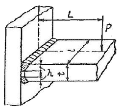
- 24
- 36
- 12
- 48
(정답률: 28%)
79. 용접부의 온도 변화를 가장 올바르게 설명한 것은?
- 필릿 이음보다 맞대기 이음의 냉각속도가 빠르다.
- 후판보다 박판의 냉각속도가 빠르다.
- 용접입열이 일정할 경우 열전도율이 클수록 냉각속도가 빠르다.
- 연강은 구리보다 냉각속도가 빠르다.
(정답률: 50%)
80. 판 두께 방향으로 수축량이나 다른 것을 이용하여 교정하는 방법으로 맞대기 용접 이음이나 필릿 이음의 각변형을 교정하는데 사용하는 법은?
- 선상가열법
- 저온응력 제거법
- 점가열법
- 피닝법
(정답률: 82%)
5과목: 용접일반 및 안전관리
81. 경도시험에서 오목자국이 남지 않기 때문에 정밀 제품의 경도시험에 널리 쓰이는 시험법은?
- 브리넬 경도
- 로크웰 경도
- 비커스 경도
- 쇼어 경도
(정답률: 42%)
82. 서브머지드 아크 용접의 다 전극용접 방식 중 아크의 복사열을 이용해 용접하므로 비교적 용입이 얕아 스테인리스강 등의 덧붙이 용접에 사용하는 방식은?
- 탬덤식
- 3전극식
- 횡 병렬식
- 횡 직렬식
(정답률: 46%)
83. 용접 작업 현장에서 주의할 점으로 가장 거리가 먼 것은?
- 포갈 위험지역 혹은 특수 인화성 물체 부근에서는 용접 작업을 해서는 안된다.
- 화재발생 방지 조치를 충분히 하고 소화기를 준비한다.
- 산소 결핍위험 장소에 대한 산소 농도 측정시 측정자에 한해서는 보호구 없이 측정 장소에 들어가도 된다.
- 탱크 내 유해 가스로 인한 중독 작용이 발생되므로 통풍을 잘하고 용접작업을 한다.
(정답률: 95%)
84. 박판의 소전류 영역에서 아크의 경직성(硬直性)이 우수하기 때문에 박판용접에 유리하고 용접부의 품질을 향상시키기 위해 실시하는 티그펄스(TIG pulse)용접은?
- 저주파 펄스용접
- 중주파 펄스용접
- 고주파 펄스용접
- 저주파와 중주파의 2단 펄스용접
(정답률: 93%)
85. 열적 핀치효과를 이용하여 비철금속 등의 절단에 사용되는 절단법은?
- 가스 절단
- 플라스마 제트 절단
- 산소창 절단
- 금속아크 절단
(정답률: 80%)
86. AW-200A 용접기로 150A를 이용하여 용접한다면 1시간 작업 중 약 몇 분간 아크 발생을 해야 되는가? (단, 정격사용률은 40% 이하이다.)
- 42.7
- 55.8
- 37.6
- 39.8
(정답률: 알수없음)
87. 아르곤 보호가스 분위기에서 불활성 가스 금속 아크용접을 할 경우 전류 값이 높을 대 많이 나타나는 용적이행 형태에 해당 되는 것은?
- 스프레이 이행
- 단락 이행
- 연속 이행
- 입상 이행
(정답률: 36%)
88. 사람이 전격으로 치명적인 충격을 받아 순간적으로 사망할 위험이 있는 허용 전류 범위로 가장 알맞은 것은?
- 30 ~ 45mA
- 15 ~ 20mA
- 8 ~ 15mA
- 50 ~ 100mA
(정답률: 28%)
89. 용접 열원을 외부로부터 가하는 것이 아니라 금속분말이 알루미늄에 의하여 산소를 빼앗기는 반응열을 사용하여 용접하는 방법은?
- 테르밋 용접법
- 가스 용접법
- 전기저항 용접법
- 불활성 가스 용접법
(정답률: 91%)
90. 피복 아크 용접에서 용접작업에 영향을 주는 요소에 대한 설명으로 맞는 것은?
- 용접봉의 각도는 후퇴각과 작업각으로 나눈다.
- 양호한 용접을 하려면 되도록 짧은 아크를 사용하는 것이 유리하다.
- 아크 전류와 아크 전압을 일정하게 유지하고 용접속도를 증가시키면 비드 폭은 넓어지고 용입은 깊어진다.
- 용접속도는 이음 모양, 용접봉의 종류에 따라 달라지며 모재의 재질, 전류값, 위빙의 유무와는 관계가 없다.
(정답률: 73%)
91. 피복 아크 용접봉에서 피복제의 주된 역할로 맞는 것은?
- 탈산 정련 작용을 하며, 파형이 고운 비드를 만들며, 용착 금속의 급냉을 방지한다.
- 용착 금속에 합금원소를 첨가하며 전기를 잘 통하게 한다.
- 용융점이 낮은 가벼운 슬래그를 만들며 용적을 크게 한다.
- 중성 또는 산화성 분위기로 공기로 인한 산화, 질화 등의 해를 방지하여 용착 금속을 보호한다.
(정답률: 67%)
92. 용접봉을 모재에 접촉한 순간에만 릴레이(relay)가 작동하여 용접작업이 가능하도록 되있는 교류 아크 용접기 부속장치는?
- 원격제어 장치
- 핫 스타트 장치
- 전격방지 장치
- 고주파 발생장치
(정답률: 73%)
93. 산소-아세틸렌 불꽃 종류 중 탄화불꽃을 사용하여 용접하여야 하는 재료의 종류로 가장 올바르게 구성된 것은?
- 연강, 탄소강, 알루미늄
- 인청동, 주철, 구리
- 모넬메탈, 황동
- 스테인리스, 모넬메탈, 스텔라이트
(정답률: 39%)
94. 아세틸렌에 접촉되는 부분에 사용해서는 안 되는 금속에 대한 설명 중 옳은 것은?
- 납은 아세틸렌에 접촉되는 부분에 사용해서는 안 되는 금속이지만 구리, 아연은 사용해도 별 위험성이 없다.
- 구리, 은, 수은은 아세킬렌에 접촉되는 부분에 써서는 안 된다. 이는 화학반응으로 인해 폭발성의 위험이 있다.
- 알루미늄 및 철은 아세틸렌에 접촉되는 부분에 사용해서는 안 된다.
- 구리는 아세틸렌에 접촉되는 부분에 사용해서는 안되나 은이나 수은은 관계없다.
(정답률: 67%)
95. 압력조정기의 구비 조건이 아닌 것은?
- 동작이 예민해야 한다.
- 조정압력은 용기 내의 가스량이 변화하여도 항상 일정해야 한다.
- 빙결(氷結)되지 않아야 한다.
- 조정압력과 방출압력과의 차이가 커야 한다.
(정답률: 79%)
96. 스터드 용접기에서 용접 토치의 구성을 바르게 설명한 것은?
- 용접 토치는 끝에 콘택트 팁과 스터드를 끼울 수 있는 스터드 척과 내부에는 전극봉, 스프링, 전자석 및 안내 튜브 등으로 구성
- 용접 토치는 끝에 전압조정장치를 부착할 수 있는 척과 내부에는 폐룰을 누르는 안내깃, 노즐 및 스위치 등으로 구성
- 용접 토치는 끝에 페룰 척과 내부에는 전극홀더를 누르는 레바, 튜브, 전자석 및 스위치 등으로 구성
- 용접 토치는 끝에 스터드를 끼울 수 있는 스터드 척과 내부에는 스터드를 누르는 스프링, 전자석 및 스위치 등으로 구성
(정답률: 80%)
97. 용접용어 중 단위 시간에 용융되는 용접봉의 길이 또는 무게로 나타내는 것은?
- 용융속도
- 용착속도
- 용융풀
- 용착효율
(정답률: 28%)
98. 용접 부분의 뒷면을 따내든지 U형, H형으ㅢ 용접 흠을 가공하기 위한 가공법으로 가장 적합한 것은?
- 스카핑
- 가스 가우징
- 솔더링
- 산소창 절단
(정답률: 73%)
99. 알루미늄 - 청동의 용접에 가장 적당한 용접법은?
- 불활성 가스 금속 아크 용접
- 전자 빔 용접
- 피복 아크 용접
- 산소 아세틸렌 용접
(정답률: 알수없음)
100. 아세틸렌 용기 속의 다공 물질이 구비해야 할 조건으로 틀린 것은?
- 가스 방전과 방출이 쉬울 것
- 강도와 안정성이 있을 것
- 아세톤이 골고루 침윤될 것
- 화학적으로 안정되고 다공성일 것
(정답률: 50%)
힘 = 펀칭력 × 펀칭면적
펀칭면적은 지름이 100mm인 원의 면적으로 다음과 같이 구할 수 있다.
펀칭면적 = π × (지름/2)^2 = 7853.98mm^2
펀칭력은 연강판의 전단저항과 연강판의 두께, 그리고 펀칭면적을 이용하여 다음과 같이 구할 수 있다.
펀칭력 = 전단저항 × 편성면적 × 두께
여기서 편성면적은 펀칭면적의 80% 정도로 가정할 수 있다. 따라서 다음과 같이 계산할 수 있다.
편성면적 = 0.8 × 펀칭면적 = 6283.18mm^2
따라서 펀칭력은 다음과 같다.
펀칭력 = 30kgf/mm^2 × 6283.18mm^2 × 2mm = 376990.8kgf
마지막으로 펀칭력을 kgf 단위에서 변환하여 답을 구할 수 있다.
힘 = 376990.8kgf ÷ 9.81m/s^2 ≈ 38394.5N ≈ 38395N ≈ 38395kgf
따라서 정답은 "37680"이 아니라 "18850"이다.